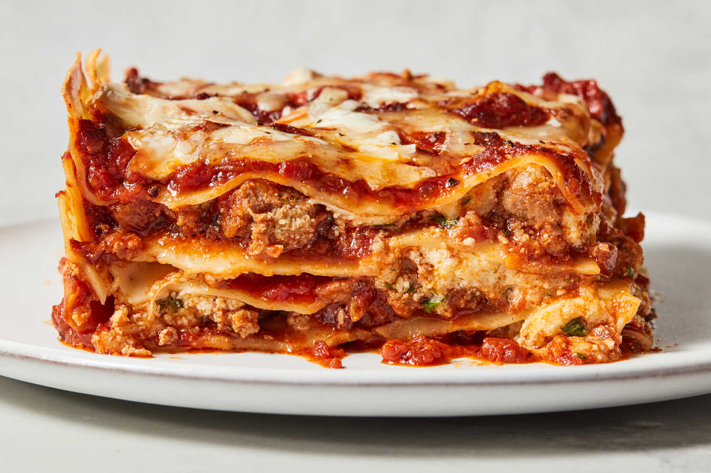

Home
Today's recipe is:
Lasagna!

What is a lasagna?
Lasagna is a classic Italian dish made up of layers of wide pasta
sheets, typically filled with a variety of ingredients such as
ricotta cheese, mozzarella, and a meat-based sauce like Bolognese.
It's often topped with a savory tomato sauce and baked in the oven
until the cheese is melted and bubbly. It's a hearty and
comforting meal that’s loved around the world.
Ingredients:
- For the Meat Sauce:
- Ground beef (or a mix of beef and pork)
- Onion (chopped)
- Garlic (minced)
- Canned crushed tomatoes or tomato sauce
- Tomato paste
- Olive oil
- Italian seasoning (or dried basil, oregano, and thyme)
- Salt and pepper
- Red wine (optional, for richer flavor)
- For the Cheese Mixture:
- Ricotta cheese
- Mozzarella cheese (shredded)
- Parmesan cheese (grated)
- Egg (to bind the cheese mixture)
- Fresh parsley or basil (chopped, optional)
- For the Pasta:
- Lasagna noodles (either regular or no-boil)
- For the Assembly:
- Olive oil or butter (to grease the baking dish)
- Extra Parmesan cheese (for topping, optional)
Steps:
- Prepare the Meat Sauce:
- Heat olive oil in a large pan over medium heat. Add chopped onions and minced garlic, sautéing until softened.
- Add the ground beef (or beef and pork mix) and cook until browned. Drain any excess fat.
- Stir in crushed tomatoes, tomato paste, and Italian seasoning. Season with salt, pepper, and optional red wine.
- Simmer the sauce for 20–30 minutes, allowing flavors to meld together.
- Prepare the Cheese Mixture:
- In a large bowl, combine ricotta cheese, shredded mozzarella, grated Parmesan, and egg. Mix until smooth.
- Season with salt, pepper, and chopped fresh parsley or basil if desired.
- Cook the Lasagna Noodles:
- If using regular lasagna noodles, cook according to package instructions. Drain and set aside.
- If using no-boil noodles, skip this step.
- Assemble the Lasagna:
- Preheat the oven to 375°F (190°C).
- Grease a 9x13-inch baking dish with olive oil or butter.
- Start with a layer of meat sauce at the bottom of the dish, followed by a layer of noodles.
- Add a layer of the cheese mixture, then repeat the layering process: sauce, noodles, cheese, until all ingredients are used up.
- Top the final layer with a generous amount of mozzarella and Parmesan cheese.
- Bake the Lasagna:
- Cover the lasagna with aluminum foil and bake for 30–40 minutes.
- Remove the foil and bake for an additional 10–15 minutes, until the cheese is golden and bubbly.
- Serve:
- Let the lasagna rest for 10–15 minutes before slicing and serving. Enjoy!